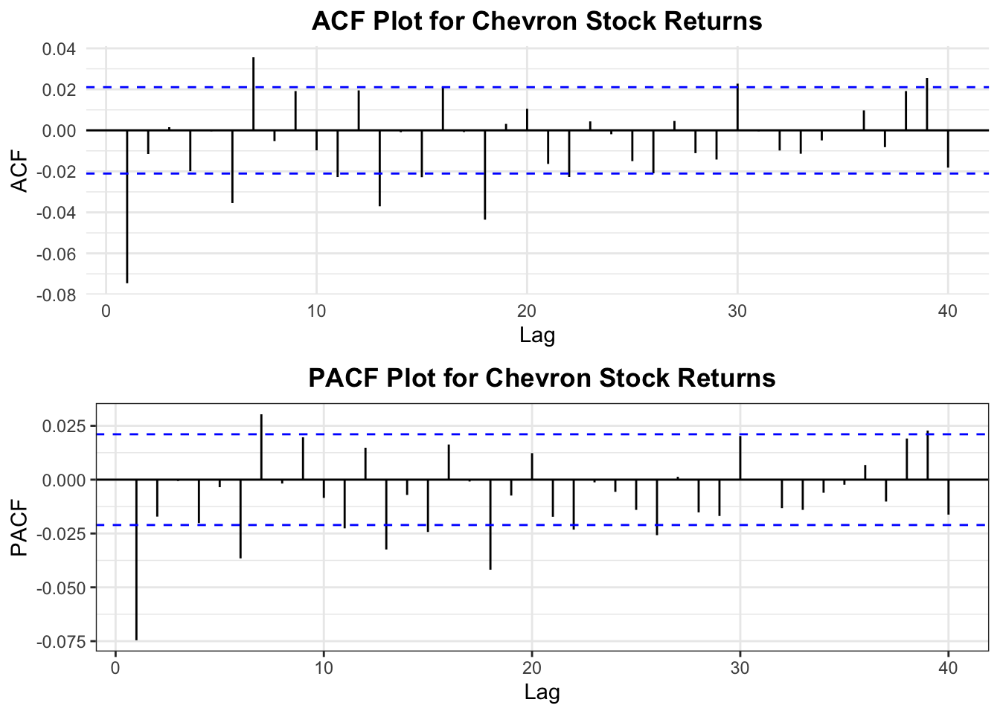
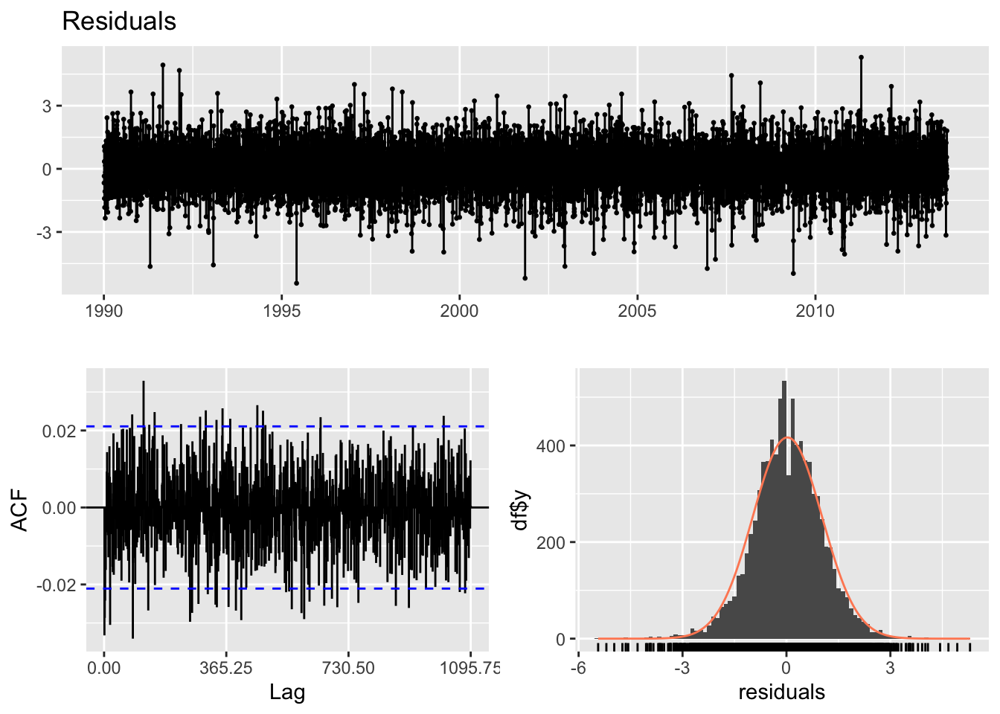
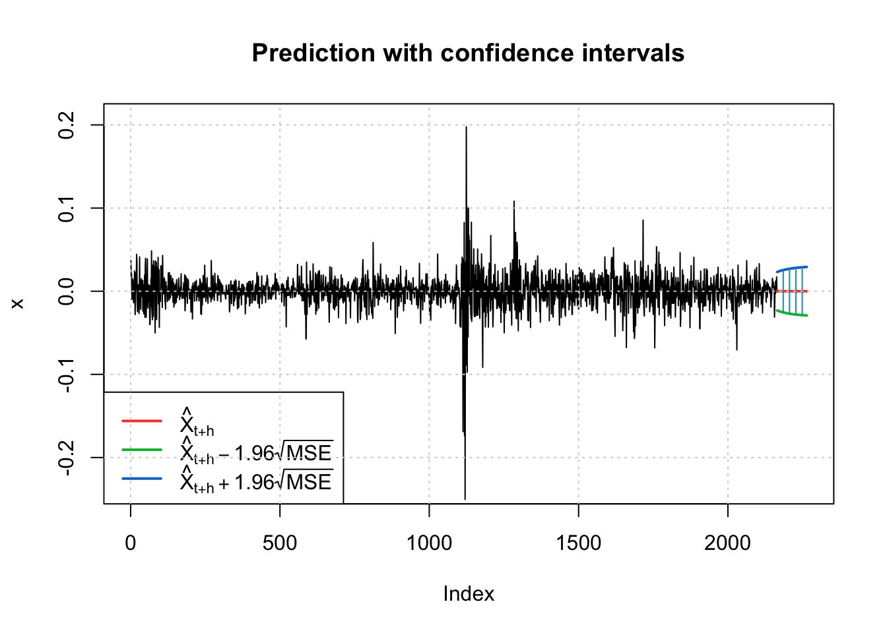
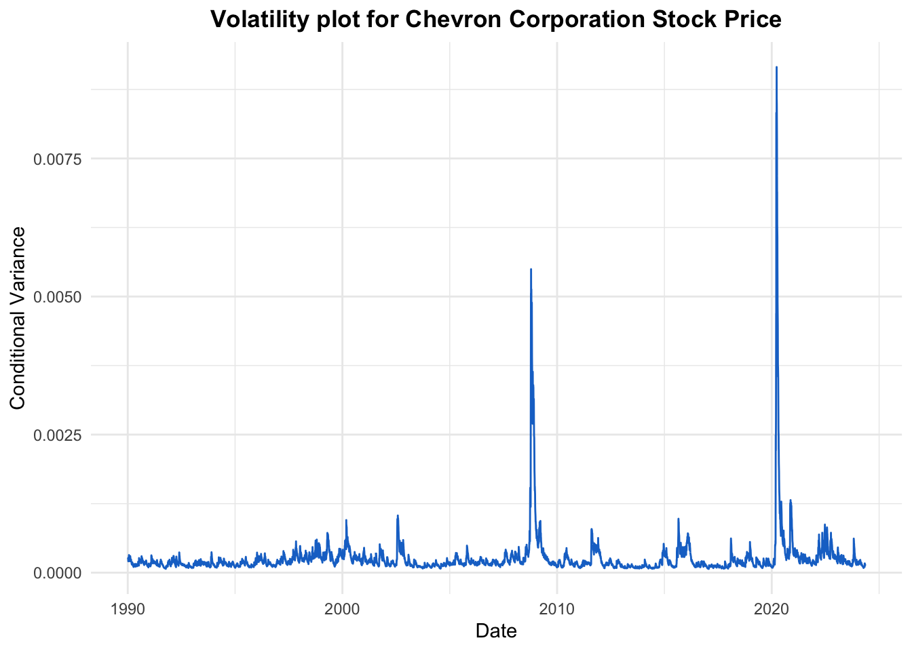

Code
# Plot the stock prices
chartSeries(Exxon_stockprice, theme = chartTheme("white"),
bar.type = "hlc",
up.col = "green",
dn.col = "red") 
In this section of our project, we will analyze financial time series data related to key players in the energy market, specifically Exxon Mobil Corporation (XOM) and Chevron Corporation (CVX). These companies, pivotal in the global energy landscape, not only reflect the economic pulses of the oil industry but also provide insights into how shifts in energy policies and market dynamics influence significant economic indicators.
Exxon Mobil, a titan in the oil industry, has been at the forefront of energy production and innovation. The company’s activities span across the extraction, refining, and distribution of energy products, positioning it as a critical barometer for assessing the economic health and trends within the energy sector. By examining the financial time series of Exxon Mobil’s stock prices, we aim to capture the volatility and market sentiment that underpin the broader economic implications of shifts in oil prices and energy policies.
Similarly, Chevron, as a major competitor and another influential player in the oil market, offers a complementary perspective to the economic analysis of the energy sector. Chevron’s extensive operations in energy production and its strategic responses to global energy demands make its financial performance a valuable indicator of the sector’s economic stability and growth. The analysis of Chevron’s stock price volatility will help us understand how energy market fluctuations and transitions toward renewable resources impact major energy corporations.
To conduct the time series analysis of financial data from Exxon Mobil and Chevron, we will utilize ARCH (Autoregressive Conditional Heteroskedasticity) and GARCH (Generalized Autoregressive Conditional Heteroskedasticity) models. These models are particularly effective for financial market data as they adeptly handle the inherent volatility typical of stock return data. By examining the volatility patterns in the stock prices of XOM and CVX, we aim to glean insights into how market dynamics, driven by both traditional and renewable energy sources, are shaping the economic narratives of these leading corporations.
In this detailed exploration, our objective is to uncover how historical and present economic conditions, policy shifts, and global energy crises influence the financial trajectories of key energy players. These insights will not only deepen our understanding of the energy sector’s impact on global economics but also aid in formulating strategies for a sustainable energy future.
To visually analyze the stock price trends of Exxon Mobil and Chevron Corporation, we will employ the quantmod package to fetch and plot the data.
Graphical representations provide intuitive insights into the financial performance over time, highlighting trends, volatilities, and anomalies that might not be immediately apparent from raw data
# Plot the stock prices
chartSeries(Exxon_stockprice, theme = chartTheme("white"),
bar.type = "hlc",
up.col = "green",
dn.col = "red")
The chart shows the stock price movement for Exxon Mobil Corporation from January 1990 to April 2024. The data, represented through a high-low-close (HLC) bar chart, shows trajectory of prices over more than three decades. A general uptrend can be observed in the late ’90s, followed by increased volatility and several peaks and dips that suggest fluctuating market conditions through the 2000s and 2010s. The trading volume, in the histogram below the main price chart, offers a narrative on market sentiment, with spikes in volume associated with changes in the industry.
# Plot the stock prices
chartSeries(Chevron_stockprice, theme = chartTheme("white"),
bar.type = "hlc",
up.col = "green",
dn.col = "red") 
The chart displays Chevron Corporation’s stock prices from 1990 to April 2024, capturing significant ups and downs that reflect key changes in the energy industry and wider economic trends. The green and red bars indicates when prices went up or down each day. After a clear rise in prices until the late ’90s, the stock experiences noticeable volatility, swinging up and down.
The histogram below the chart, which tracks trading volume, aligns with notable shifts in stock prices, suggesting times when investors were particularly active. This visualization lays the groundwork for a detailed examination of price volatility using ARCH/GARCH models, offering a visual summary of the market forces that have influenced Chevron’s stock over the years.
Now, we will move forward to fit an ARCH/GARCH model to the stock price data. The first step in this process is to prepare the time series by calculating the stock price returns, which are typically used in financial time series modeling because they are more likely to exhibit stationary properties—a key requirement for ARCH/GARCH models.
# Convert to a time series object
Exxon_ts <- ts(Exxon_stockprice$XOM.Adjusted, start=decimal_date(as.Date("1990-01-01")), frequency = 365.25)
# Calculate log returns
returns_exxon <- log(Exxon_ts)%>% diff()
knitr::kable(summary(returns_exxon))| XOM.Adjusted | |
|---|---|
| Min. :-0.1502705 | |
| 1st Qu.:-0.0076624 | |
| Median : 0.0001225 | |
| Mean : 0.0003904 | |
| 3rd Qu.: 0.0085782 | |
| Max. : 0.1586308 |
From the summary statistics, we can clearly see that the mean return is close to zero, but with significant deviation. This is characteristic of financial data, where over long periods, the mean return tends to be small. This behavior of returns—small and steady on average, with occasional bursts of high variation—is precisely what ARCH/GARCH models aim to capture and quantify.
# Plot the returns
autoplot(returns_exxon, color="dodgerblue3") +
theme_minimal() +
ggtitle("Exxon Mobil Stock Price Returns") +
theme(plot.title = element_text(hjust = 0.5, face = "bold"))
The plot shows the daily returns on Exxon Mobil’s stock from 1990 to 2024. The returns, calculated using logarithmic differences, fluctuate around zero, with spikes that indicate days of particularly high volatility. The distribution of returns is fairly symmetric, there is volatility clustering in the returns.
# Convert to a time series object
Chevron_ts <- ts(Chevron_stockprice$CVX.Adjusted, start=decimal_date(as.Date("1990-01-01")), frequency = 365.25)
# Calculate log returns
returns_chevron <- log(Chevron_ts)%>% diff()
knitr::kable(summary(returns_chevron))| CVX.Adjusted | |
|---|---|
| Min. :-0.2500624 | |
| 1st Qu.:-0.0079876 | |
| Median : 0.0004270 | |
| Mean : 0.0004046 | |
| 3rd Qu.: 0.0089660 | |
| Max. : 0.2049038 |
The summary statistics for Chevron’s returns highlight a median value slightly above zero, suggesting that half of the observed returns were positive over the long term. However, the minimum and maximum values point to significant swings in the stock’s performance.
# Plot the returns
autoplot(returns_chevron, color="dodgerblue3") +
theme_minimal() +
ggtitle("Chevron Stock Price Returns") +
theme(plot.title = element_text(hjust = 0.5, face = "bold"))
The plotted returns of Chevron’s stock, similar to Exxon Mobil’s, show clusters of volatility. These clusters where the spikes are denser indicate periods of heightened uncertainty or market activity. This pattern is a key feature that the forthcoming ARCH/GARCH analysis will aim to capture.
To further investigate the nature of the stock price returns and prepare for ARCH/GARCH modeling, it’s essential to look at the autocorrelations.
Autocorrelation Function (ACF) and Partial Autocorrelation Function (PACF) plots help us identify whether returns are influenced by their own past values (autocorrelation) and to what extent (partial autocorrelation). This step is key in determining the appropriate lag order for the ARCH/GARCH models.
#ACF Plot for Exxon Mobil Stock
Exxon_acf <- ggAcf(returns_exxon,40) +
ggtitle("ACF Plot for Exxon Mobil Returns ") +
theme_minimal() +
theme(plot.title = element_text(hjust = 0.5, face = "bold"))
#PACF Plot for Exxon Mobil Stock
Exxon_pacf <- ggPacf(returns_exxon,40) +
ggtitle("PACF Plot for Exxon Mobil Returns") +
theme_bw() +
theme(plot.title = element_text(hjust = 0.5, face = "bold"))
grid.arrange(Exxon_acf, Exxon_pacf, nrow = 2)
Upon examining the ACF and PACF plots we can see values quickly drop off and mostly lie within the significance bounds, the returns appear to be stationary. Possible q and p values would be q = 0, 1, 2 and p = 0, 1, 2
#ACF Plot for Chevron Stock
Chevron_acf <- ggAcf(returns_chevron,40) +
ggtitle("ACF Plot for Chevron Stock Returns") +
theme_minimal() +
theme(plot.title = element_text(hjust = 0.5, face = "bold"))
#PACF Plot for Chevron Stock
Chevron_pacf <- ggPacf(returns_chevron,40) +
ggtitle("PACF Plot for Chevron Stock Returns") +
theme_bw() +
theme(plot.title = element_text(hjust = 0.5, face = "bold"))
grid.arrange(Chevron_acf, Chevron_pacf, nrow = 2)
Upon examining the ACF and PACF plots we can see values quickly drop off and mostly lie within the significance bounds, the returns appear to be stationary. Possible q and p values would be q = 0, 1 and p = 0, 1
The ACF and PACF plots for the absolute returns give us insights into the nature of volatility in the stock’s returns. When we analyze absolute returns, we’re focusing on the magnitude of changes, regardless of direction, which can often reveal volatility patterns.
#ACF Plot for Exxon Mobil Stock
Exxon_acf_abs <- ggAcf(abs(returns_exxon),lag.max=40) +
ggtitle("ACF Plot for Exxon Mobil Absolute Returns") +
theme_minimal() +
theme(plot.title = element_text(hjust = 0.5, face = "bold"))
#PACF Plot for Exxon Mobil Stock
Exxon_pacf_abs <- ggPacf(abs(returns_exxon),lag.max=40) +
ggtitle("PACF Plot for Exxon Mobil Absolute Returns") +
theme_bw() +
theme(plot.title = element_text(hjust = 0.5, face = "bold"))
grid.arrange(Exxon_acf_abs, Exxon_pacf_abs, nrow = 2)
The ACF plot for the absolute returns shows significant autocorrelation across several lags, this indicates persistent volatility in the stock price returns. This is also indicative of the volatility clustering seen in financial time series.
The PACF plot shows significant correlations at the early lags (from 1 to 11, then at 17 and 18). After these initial lags, the correlations in the PACF plot decrease and generally stay within the confidence interval
#ACF Plot for Chevron Stock
Chevron_acf_abs <- ggAcf(abs(returns_chevron),40) +
ggtitle("ACF Plot for Chevron Stock Absolute Returns") +
theme_minimal() +
theme(plot.title = element_text(hjust = 0.5, face = "bold"))
#PACF Plot for Chevron Stock
Chevron_pacf_abs <- ggPacf(abs(returns_chevron),40) +
ggtitle("PACF Plot for Chevron Stock Absolute Returns") +
theme_bw() +
theme(plot.title = element_text(hjust = 0.5, face = "bold"))
grid.arrange(Chevron_acf_abs, Chevron_pacf_abs, nrow = 2)
The ACF plot for the absolute returns shows significant autocorrelation across all the lags, this indicates persistent volatility in the stock price returns. This is also indicative of the volatility clustering seen in financial time series.
The PACF plot shows significant correlations at the early lags (from 1 to 11). After these initial lags, the correlations in the PACF plot decrease and generally stay within the confidence interval
Examining squared returns is a technique in time series analysis to assess volatility patterns. When returns are squared, patterns in volatility might become more evident, as periods of high volatility will result in higher squared returns. These patterns are crucial for ARCH/GARCH models.
# ACF Plot for Exxon Mobil Squared Returns
Exxon_acf_se <- ggAcf(returns_exxon^2, lag.max=40) +
ggtitle("ACF Plot for Exxon Mobil Squared Returns") +
theme_minimal() +
theme(plot.title = element_text(hjust = 0.5, face = "bold"))
# PACF Plot for Exxon Mobil Squared Returns
Exxon_pacf_se <- ggPacf(returns_exxon^2, lag.max=40) +
ggtitle("PACF Plot for Exxon Mobil Squared Returns") +
theme_bw() +
theme(plot.title = element_text(hjust = 0.5, face = "bold"))
# Arrange the plots on a grid
grid.arrange(Exxon_acf_se, Exxon_pacf_se, nrow = 2)The ACF plot for squared returns shows a much slower decay, indicating that volatility shocks have a long-lasting effect. The ACF plot here suggests that volatility shocks to Exxon Mobil’s stock prices are persistent, with a high level of autocorrelation extending across many lags.
The PACF plot for squared returns, while also showing some significant lags, doesn’t carry the same pattern of persistence as the ACF.
This persistence of volatility as indicated by the squared returns ACF and PACF plots reinforces the need for a GARCH model in capturing the time-varying volatility in the stock returns
#ACF Plot for Chevron Stock
Chevron_acf_se <- ggAcf(returns_chevron^2,40) +
ggtitle("ACF Plot for Chevron Stock Squared Returns") +
theme_minimal() +
theme(plot.title = element_text(hjust = 0.5, face = "bold"))
#PACF Plot for Chevron Stock
Chevron_pacf_se <- ggPacf(returns_chevron^2,40) +
ggtitle("PACF Plot for Chevron Stock Squared Returns") +
theme_bw() +
theme(plot.title = element_text(hjust = 0.5, face = "bold"))
grid.arrange(Chevron_acf_se, Chevron_pacf_se, nrow = 2)
The ACF plot here suggests that volatility shocks are persistent, with a high level of autocorrelation.
The PACF plot for squared returns, while also showing some significant lags, doesn’t carry the same pattern of persistence as the ACF.
This persistence of volatility as indicated by the squared returns ACF and PACF plots reinforces the need for a GARCH model in capturing the time-varying volatility in the stock returns
Before fitting an ARCH or GARCH model, it is important to formally test for the presence of ARCH effects that is, to test whether there are autoregressive conditional heteroskedasticity features in the time series data.
# Conduct the ARCH test
ArchTest(returns_exxon, lags=1, demean=TRUE)
ARCH LM-test; Null hypothesis: no ARCH effects
data: returns_exxon
Chi-squared = 590.59, df = 1, p-value < 2.2e-16The result of the ARCH test indicates a Chi-squared statistic of 590.35 with 1 degree of freedom and a p-value less than 2.2e-16, which is extremely low. This leads us to reject the null hypothesis of no ARCH effects. There is very strong evidence of autoregressive conditional heteroskedasticity in the Exxon Mobil stock returns.
# Conduct the ARCH test
ArchTest(returns_chevron, lags=1, demean=TRUE)
ARCH LM-test; Null hypothesis: no ARCH effects
data: returns_chevron
Chi-squared = 260.66, df = 1, p-value < 2.2e-16The result of the ARCH test indicates a Chi-squared statistic of 260.57 with 1 degree of freedom and a p-value less than 2.2e-16, which is extremely low. This leads us to reject the null hypothesis of no ARCH effects. There is very strong evidence of autoregressive conditional heteroskedasticity.
Given these results, it is appropriate to proceed with fitting an ARCH/GARCH model to the stock returns to better understand and predict the volatility patterns.
When volatility clustering is present, as indicated by the ARCH test, it’s good practice to first model the mean of the time series. An ARIMA model helps in capturing the autocorrelation in the mean of the series. Once we’ve accounted for any autocorrelation in the mean with the ARIMA model, we can proceed to model the conditional variance (volatility) using GARCH models.
To find the best ARIMA model, we search across different combinations of p (autoregressive terms), d (differencing terms), and q (moving average terms), and select the model with the lowest information criteria (AIC, BIC, and AICc).
ARIMA.c=function(p1,p2,q1,q2,data){
temp=c()
#d=1
i=1
temp= data.frame()
ls=matrix(rep(NA,6*18),nrow=18)
for (p in p1:p2)
{
for(q in q1:q2)
{
for(d in 0:1)
{
if(p+d+q<=6)
{
model<- Arima(data,order=c(p,d,q))
ls[i,]= c(p,d,q,model$aic,model$bic,model$aicc)
i=i+1
}
}
}
}
temp= as.data.frame(ls)
names(temp)= c("p","d","q","AIC","BIC","AICc")
temp
}
output <- ARIMA.c(0,2,0,2,data=returns_exxon)
output p d q AIC BIC AICc
1 0 0 0 -47325.61 -47311.48 -47325.61
2 0 1 0 -40705.96 -40698.89 -40705.95
3 0 0 1 -47377.39 -47356.20 -47377.39
4 0 1 1 -47310.08 -47295.95 -47310.07
5 0 0 2 -47399.70 -47371.44 -47399.69
6 0 1 2 -47361.67 -47340.48 -47361.67
7 1 0 0 -47371.58 -47350.38 -47371.57
8 1 1 0 -43325.81 -43311.67 -43325.80
9 1 0 1 -47402.49 -47374.23 -47402.48
10 1 1 1 -47355.89 -47334.69 -47355.89
11 1 0 2 -47400.88 -47365.55 -47400.87
12 1 1 2 -47386.54 -47358.28 -47386.54
13 2 0 0 -47396.49 -47368.22 -47396.48
14 2 1 0 -44551.13 -44529.94 -44551.13
15 2 0 1 -47400.82 -47365.49 -47400.81
16 2 1 1 -47380.69 -47352.43 -47380.68
17 2 0 2 -47399.60 -47357.21 -47399.59
18 2 1 2 -47384.92 -47349.60 -47384.91output[which.min(output$AIC),] p d q AIC BIC AICc
9 1 0 1 -47402.49 -47374.23 -47402.48output[which.min(output$BIC),] p d q AIC BIC AICc
9 1 0 1 -47402.49 -47374.23 -47402.48output[which.min(output$AICc),] p d q AIC BIC AICc
9 1 0 1 -47402.49 -47374.23 -47402.48The best ARIMA model according to the lowest AIC, BIC and AICC is ARIMA(1,0,1)
fit_exxon <- Arima(returns_exxon,order=c(1,0,1))
summary(fit_exxon)Series: returns_exxon
ARIMA(1,0,1) with non-zero mean
Coefficients:
ar1 ma1 mean
0.5304 -0.6125 4e-04
s.e. 0.0729 0.0679 1e-04
sigma^2 = 0.000244: log likelihood = 23705.24
AIC=-47402.49 AICc=-47402.48 BIC=-47374.23
Training set error measures:
ME RMSE MAE MPE MAPE MASE ACF1
Training set -2.599336e-06 0.01561646 0.01100092 NaN Inf 0.6700663 0.001754744The standard errors are relatively small compared to the coefficients, suggesting that the coefficients are likely to be significantly different from zero.
To find the best ARIMA model, we search across different combinations of p (autoregressive terms), d (differencing terms), and q (moving average terms), and select the model with the lowest information criteria (AIC, BIC, and AICc).
ARIMA.c=function(p1,p2,q1,q2,data){
temp=c()
#d=1
i=1
temp= data.frame()
ls=matrix(rep(NA,6*18),nrow=18)
for (p in p1:p2)
{
for(q in q1:q2)
{
for(d in 0:1)
{
if(p+d+q<=6)
{
model<- Arima(data,order=c(p,d,q))
ls[i,]= c(p,d,q,model$aic,model$bic,model$aicc)
i=i+1
}
}
}
}
temp= as.data.frame(ls)
names(temp)= c("p","d","q","AIC","BIC","AICc")
temp
}
output <- ARIMA.c(0,2,0,2,data=returns_chevron)
output p d q AIC BIC AICc
1 0 0 0 -46434.21 -46420.08 -46434.21
2 0 1 0 -39813.17 -39806.11 -39813.17
3 0 0 1 -46481.90 -46460.71 -46481.90
4 0 1 1 -46418.78 -46404.65 -46418.78
5 0 0 2 -46481.15 -46452.89 -46481.14
6 0 1 2 -46466.30 -46445.11 -46466.30
7 1 0 0 -46480.46 -46459.27 -46480.46
8 1 1 0 -42654.57 -42640.44 -42654.57
9 1 0 1 -46481.30 -46453.04 -46481.29
10 1 1 1 -46464.88 -46443.68 -46464.88
11 1 0 2 -46479.14 -46443.81 -46479.13
12 1 1 2 -46463.86 -46435.60 -46463.85
13 2 0 0 -46481.03 -46452.77 -46481.02
14 2 1 0 -43831.37 -43810.18 -43831.37
15 2 0 1 -46479.04 -46443.71 -46479.03
16 2 1 1 -46465.41 -46437.15 -46465.41
17 2 0 2 -46477.40 -46435.01 -46477.39
18 2 1 2 -46468.80 -46433.47 -46468.79output[which.min(output$AIC),] p d q AIC BIC AICc
3 0 0 1 -46481.9 -46460.71 -46481.9output[which.min(output$BIC),] p d q AIC BIC AICc
3 0 0 1 -46481.9 -46460.71 -46481.9output[which.min(output$AICc),] p d q AIC BIC AICc
3 0 0 1 -46481.9 -46460.71 -46481.9The best ARIMA model according to the lowest AIC is ARIMA(0,0,1)
fit_chevron <- Arima(returns_chevron,order=c(0,0,1))
summary(fit_chevron)Series: returns_chevron
ARIMA(0,0,1) with non-zero mean
Coefficients:
ma1 mean
-0.0768 4e-04
s.e. 0.0109 2e-04
sigma^2 = 0.0002714: log likelihood = 23243.95
AIC=-46481.9 AICc=-46481.9 BIC=-46460.71
Training set error measures:
ME RMSE MAE MPE MAPE MASE ACF1
Training set 2.755876e-08 0.01647188 0.01143922 NaN Inf 0.6711245 0.0009039099The zero autocorrelation at the first lag (ACF1) of residuals indicates that the model is capturing the correlation in the data quite well.
Now we will analyse the residual in depth, this step is crucial because any pattern left in the residuals can indicate that the model hasn’t fully captured the underlying process.
After fitting an ARIMA(1,0,1) model to the Exxon Mobil returns, we need to analyze the residuals to ensure that the model has captured the data’s structure adequately.
model_output_e <- capture.output(sarima(returns_exxon,1,0,1))#model_output_e
cat(model_output_e[22:34], model_output_e[length(model_output_e)], sep = "\n") converged
<><><><><><><><><><><><><><>
Coefficients:
Estimate SE t.value p.value
ar1 0.5304 0.0729 7.2769 0.0000
ma1 -0.6125 0.0679 -9.0166 0.0000
xmean 0.0004 0.0001 2.8264 0.0047
sigma^2 estimated as 0.0002438737 on 8647 degrees of freedom
AIC = -5.480056 AICc = -5.480056 BIC = -5.476789
The Standardized Residuals plot does show some volatility left, just before 2000, between 2003 and 2004 and around 2010 to 2011. These spikes indicate that the ARIMA model may not have fully captured the variability during these periods.
The coefficient estimates and their corresponding standard errors, t-values, and p-values confirm the significance of the AR1 and MA1 terms.
Moving forward with the analysis, after fitting an ARIMA(1,0,1) model, we will now examine the autocorrelation in both the residuals and the squared residuals. This step is crucial as it helps us to understand the nature of the residuals and assess whether a GARCH model is necessary.
exxon.res<-fit_exxon$residuals
plot1 <- ggAcf(exxon.res, 40) +
theme_minimal() +
theme(plot.title = element_text(hjust = 0.5, face = "bold"))
plot2<- ggPacf(exxon.res, 40) +
theme_minimal() +
theme(plot.title = element_text(hjust = 0.5, face = "bold"))
grid.arrange(plot1, plot2,nrow=2)
The autocorrelations appear to be within the confidence bands for most lags, suggesting there is no significant autocorrelation remaining in the residuals. Similarly, the PACF shows that the partial autocorrelations are also within the confidence bounds for most of the lags
plot3 <- ggAcf(exxon.res^2, 40) +
theme_minimal() +
theme(plot.title = element_text(hjust = 0.5, face = "bold"))
plot4<- ggPacf(exxon.res^2, 40) +
theme_minimal() +
theme(plot.title = element_text(hjust = 0.5, face = "bold"))
grid.arrange(plot3, plot4,nrow=2)
The slow decay in autocorrelation across lags indicates that there is high volatility clustering. The PACF plot also shows some spikes at early lags, suggesting that there is some volatility.
These plots are indicative of conditional heteroskedasticity in the series, which is not captured by the ARIMA model. It is recommended to proceed with fitting a GARCH model. The significant ACF in the squared residuals indicates that a GARCH(1,1) model is appropriate.
After fitting an ARIMA(0,0,1) model to the Chevron returns, we need to analyze the residuals to ensure that the model has captured the data’s structure adequately.
model_output_c <- capture.output(sarima(returns_chevron,0,0,1))
#model_output_c
cat(model_output_c[11:22], model_output_c[length(model_output_c)], sep = "\n") converged
<><><><><><><><><><><><><><>
Coefficients:
Estimate SE t.value p.value
ma1 -0.0768 0.0109 -7.0782 0.0000
xmean 0.0004 0.0002 2.4693 0.0136
sigma^2 estimated as 0.0002713227 on 8648 degrees of freedom
AIC = -5.37363 AICc = -5.37363 BIC = -5.37118
The Standardized Residuals plot does show some volatility left, around 2003, and then 2010 to 2012. These spikes indicate that the ARIMA model may not have fully captured the variability during these periods.
Both the coefficient estimates are significant.
Moving forward with the analysis, after fitting an ARIMA(0,0,1) model, we will now examine the autocorrelation in both the residuals and the squared residuals. This step is crucial as it helps us to understand the nature of the residuals and assess whether a GARCH model is necessary.
chevron.res<-fit_chevron$residuals
plot5 <- ggAcf(chevron.res, 40) +
theme_minimal() +
theme(plot.title = element_text(hjust = 0.5, face = "bold"))
plot6 <- ggPacf(chevron.res, 40) +
theme_minimal() +
theme(plot.title = element_text(hjust = 0.5, face = "bold"))
grid.arrange(plot5, plot6,nrow=2)
The autocorrelations appear to be within the confidence bands for most lags, suggesting there is no significant autocorrelation remaining in the residuals. Similarly, the PACF shows that the partial autocorrelations are also within the confidence bounds for most of the lags
plot7 <- ggAcf(chevron.res^2, 40) +
theme_minimal() +
theme(plot.title = element_text(hjust = 0.5, face = "bold"))
plot8 <- ggPacf(chevron.res^2, 40) +
theme_minimal() +
theme(plot.title = element_text(hjust = 0.5, face = "bold"))
grid.arrange(plot7,plot8,nrow=2)
The slow decay in autocorrelation across lags indicates that there is high volatility clustering. The PACF plot also shows some spikes at early lags (from 1 to 9), suggesting that there is some volatility.
These plots are indicative of conditional heteroskedasticity in the series, which is not captured by the ARIMA model. It is recommended to proceed with fitting a GARCH model. The significant ACF in the squared residuals indicates that a GARCH(1,1) model is appropriate.
After determining the presence of conditional heteroskedasticity in the residuals of the ARIMA model, we proceed with fitting a GARCH model. The GARCH model is designed to model the volatility clustering evident in financial time series, allowing for more accurate forecasting of risk and volatility.
model <- list()
cc <- 1
for (p in 1:9) {
for (q in 1:9) {
suppressWarnings({
model[[cc]] <- garch(exxon.res, order=c(p,q), trace=F)
})
cc <- cc + 1
}
}
## get AIC values for model evaluation
GARCH_AIC <- sapply(model, AIC) ## model with lowest AIC is the best
which(GARCH_AIC == min(GARCH_AIC))[1] 1model[[which(GARCH_AIC == min(GARCH_AIC))]]
Call:
garch(x = exxon.res, order = c(p, q), trace = F)
Coefficient(s):
a0 a1 b1
2.446e-06 7.076e-02 9.190e-01 The model with the lowest AIC appears to be a GARCH (1,1). Now lets fit GARCH (1,1)
#Fit the GARCH(1,1) model on the residuals
garch_fit_exxon <- garchFit(~garch(1, 1), data = exxon.res, trace = F)
#Summary of the fitted GARCH model
summary(garch_fit_exxon)
Title:
GARCH Modelling
Call:
garchFit(formula = ~garch(1, 1), data = exxon.res, trace = F)
Mean and Variance Equation:
data ~ garch(1, 1)
<environment: 0x107b6e828>
[data = exxon.res]
Conditional Distribution:
norm
Coefficient(s):
mu omega alpha1 beta1
2.5993e-05 2.4488e-06 7.0824e-02 9.1892e-01
Std. Errors:
based on Hessian
Error Analysis:
Estimate Std. Error t value Pr(>|t|)
mu 2.599e-05 1.289e-04 0.202 0.84
omega 2.449e-06 3.988e-07 6.141 8.21e-10 ***
alpha1 7.082e-02 5.375e-03 13.176 < 2e-16 ***
beta1 9.189e-01 6.108e-03 150.444 < 2e-16 ***
---
Signif. codes: 0 '***' 0.001 '**' 0.01 '*' 0.05 '.' 0.1 ' ' 1
Log Likelihood:
25012.55 normalized: 2.891624
Description:
Sun May 5 18:33:10 2024 by user:
Standardised Residuals Tests:
Statistic p-Value
Jarque-Bera Test R Chi^2 662.9813 0
Shapiro-Wilk Test R W NA NA
Ljung-Box Test R Q(10) 19.93908 0.02983422
Ljung-Box Test R Q(15) 22.27227 0.1008611
Ljung-Box Test R Q(20) 32.00702 0.0432236
Ljung-Box Test R^2 Q(10) 21.06936 0.02061506
Ljung-Box Test R^2 Q(15) 28.53337 0.01845906
Ljung-Box Test R^2 Q(20) 30.91429 0.05633217
LM Arch Test R TR^2 24.28011 0.01862777
Information Criterion Statistics:
AIC BIC SIC HQIC
-5.782324 -5.779056 -5.782324 -5.781210 All coefficients (omega, alpha1, beta1) are highly significant. This implies that the GARCH(1,1) model captures the volatility clustering effectively.
The best model according to method 1 is ARIMA(1,0,1) + GARCH(1,1).
model <- list()
cc <- 1
for (p in 1:9) {
for (q in 1:9) {
suppressWarnings({
model[[cc]] <- garch(chevron.res, order=c(p,q), trace=F)
})
cc <- cc + 1
}
}
## get AIC values for model evaluation
GARCH_AIC <- sapply(model, AIC) ## model with lowest AIC is the best
which(GARCH_AIC == min(GARCH_AIC))[1] 1model[[which(GARCH_AIC == min(GARCH_AIC))]]
Call:
garch(x = chevron.res, order = c(p, q), trace = F)
Coefficient(s):
a0 a1 b1
3.980e-06 7.028e-02 9.132e-01 The model with the lowest AIC appears to be a GARCH (1,1). Now lets fit GARCH (1,1)
#Fit the GARCH(1,1) model on the residuals
garch_fit_chevron <- garchFit(~garch(1, 1), data = chevron.res, trace = F)
#Summary of the fitted GARCH model
summary(garch_fit_chevron)
Title:
GARCH Modelling
Call:
garchFit(formula = ~garch(1, 1), data = chevron.res, trace = F)
Mean and Variance Equation:
data ~ garch(1, 1)
<environment: 0x107e20f78>
[data = chevron.res]
Conditional Distribution:
norm
Coefficient(s):
mu omega alpha1 beta1
2.7593e-08 3.9797e-06 7.0278e-02 9.1320e-01
Std. Errors:
based on Hessian
Error Analysis:
Estimate Std. Error t value Pr(>|t|)
mu 2.759e-08 1.393e-04 0.000 1
omega 3.980e-06 5.763e-07 6.906 4.99e-12 ***
alpha1 7.028e-02 5.251e-03 13.383 < 2e-16 ***
beta1 9.132e-01 6.499e-03 140.515 < 2e-16 ***
---
Signif. codes: 0 '***' 0.001 '**' 0.01 '*' 0.05 '.' 0.1 ' ' 1
Log Likelihood:
24545.54 normalized: 2.837635
Description:
Sun May 5 18:33:12 2024 by user:
Standardised Residuals Tests:
Statistic p-Value
Jarque-Bera Test R Chi^2 983.1367 0
Shapiro-Wilk Test R W NA NA
Ljung-Box Test R Q(10) 35.10628 0.0001197562
Ljung-Box Test R Q(15) 38.88622 0.0006664173
Ljung-Box Test R Q(20) 50.08895 0.0002150749
Ljung-Box Test R^2 Q(10) 18.63892 0.04509597
Ljung-Box Test R^2 Q(15) 19.8402 0.178149
Ljung-Box Test R^2 Q(20) 26.67559 0.1446401
LM Arch Test R TR^2 18.72892 0.09528387
Information Criterion Statistics:
AIC BIC SIC HQIC
-5.674345 -5.671077 -5.674345 -5.673231 All coefficients (omega, alpha1, beta1) are highly significant, with very small p-values. This implies that the GARCH(1,1) model captures the volatility clustering effectively. The high log likelihood suggest that the model is a good fit.
The GARCH(1,1) model effectively captures the conditional heteroscedasticity of Chevron’s stock returns.
The best model according to method 1 is ARIMA(0,0,1) + GARCH(1,1).
The GARCH model is designed to model the volatility clustering evident in financial time series, allowing for more accurate forecasting of risk and volatility. Here we will fit the model on the returns
model <- list()
cc <- 1
for (p in 1:9) {
for (q in 1:9) {
suppressWarnings({
model[[cc]] <- garch(returns_exxon, order=c(p,q), trace=F)
})
cc <- cc + 1
}
}
## get AIC values for model evaluation
GARCH_AIC <- sapply(model, AIC) ## model with lowest AIC is the best
which(GARCH_AIC == min(GARCH_AIC))[1] 1model[[which(GARCH_AIC == min(GARCH_AIC))]]
Call:
garch(x = returns_exxon, order = c(p, q), trace = F)
Coefficient(s):
a0 a1 b1
2.388e-06 6.937e-02 9.207e-01 GARCH(1,1) model has the lowest AIC.
garch_fit_returns_exxon <- garchFit(~garch(1,1), data = returns_exxon, trace = F)
summary(garch_fit_returns_exxon)
Title:
GARCH Modelling
Call:
garchFit(formula = ~garch(1, 1), data = returns_exxon, trace = F)
Mean and Variance Equation:
data ~ garch(1, 1)
<environment: 0x1082a3b40>
[data = returns_exxon]
Conditional Distribution:
norm
Coefficient(s):
mu omega alpha1 beta1
5.1633e-04 2.4198e-06 7.0487e-02 9.1944e-01
Std. Errors:
based on Hessian
Error Analysis:
Estimate Std. Error t value Pr(>|t|)
mu 5.163e-04 1.276e-04 4.046 5.22e-05 ***
omega 2.420e-06 3.965e-07 6.103 1.04e-09 ***
alpha1 7.049e-02 5.333e-03 13.216 < 2e-16 ***
beta1 9.194e-01 6.049e-03 151.997 < 2e-16 ***
---
Signif. codes: 0 '***' 0.001 '**' 0.01 '*' 0.05 '.' 0.1 ' ' 1
Log Likelihood:
24990.29 normalized: 2.889051
Description:
Sun May 5 18:33:15 2024 by user:
Standardised Residuals Tests:
Statistic p-Value
Jarque-Bera Test R Chi^2 617.3581 0
Shapiro-Wilk Test R W NA NA
Ljung-Box Test R Q(10) 28.03498 0.001782117
Ljung-Box Test R Q(15) 30.81187 0.009308218
Ljung-Box Test R Q(20) 41.90705 0.002843746
Ljung-Box Test R^2 Q(10) 21.49168 0.01791427
Ljung-Box Test R^2 Q(15) 29.10062 0.01561133
Ljung-Box Test R^2 Q(20) 31.51951 0.04869507
LM Arch Test R TR^2 24.53467 0.01718853
Information Criterion Statistics:
AIC BIC SIC HQIC
-5.777177 -5.773910 -5.777178 -5.776063 All parameters in the model are statistically significant, as indicated by the p-values being less than 0.05.
Thus for method 2 fitting GARCH(1,1) model directly to the returns of Exxon Mobil is the best model.
model <- list()
cc <- 1
for (p in 1:9) {
for (q in 1:9) {
suppressWarnings({
model[[cc]] <- garch(returns_chevron, order=c(p,q), trace=F)
})
cc <- cc + 1
}
}
## get AIC values for model evaluation
GARCH_AIC <- sapply(model, AIC) ## model with lowest AIC is the best
which(GARCH_AIC == min(GARCH_AIC))[1] 1model[[which(GARCH_AIC == min(GARCH_AIC))]]
Call:
garch(x = returns_chevron, order = c(p, q), trace = F)
Coefficient(s):
a0 a1 b1
3.889e-06 6.923e-02 9.146e-01 GARCH(1,1) model has the lowest AIC.
garch_fit_returns_chevron <- garchFit(~garch(1,1), data = returns_chevron, trace = F)
summary(garch_fit_returns_chevron)
Title:
GARCH Modelling
Call:
garchFit(formula = ~garch(1, 1), data = returns_chevron, trace = F)
Mean and Variance Equation:
data ~ garch(1, 1)
<environment: 0x10499f938>
[data = returns_chevron]
Conditional Distribution:
norm
Coefficient(s):
mu omega alpha1 beta1
6.3400e-04 3.9588e-06 7.0647e-02 9.1291e-01
Std. Errors:
based on Hessian
Error Analysis:
Estimate Std. Error t value Pr(>|t|)
mu 6.340e-04 1.381e-04 4.590 4.44e-06 ***
omega 3.959e-06 5.713e-07 6.929 4.24e-12 ***
alpha1 7.065e-02 5.247e-03 13.464 < 2e-16 ***
beta1 9.129e-01 6.465e-03 141.201 < 2e-16 ***
---
Signif. codes: 0 '***' 0.001 '**' 0.01 '*' 0.05 '.' 0.1 ' ' 1
Log Likelihood:
24555.55 normalized: 2.838792
Description:
Sun May 5 18:33:17 2024 by user:
Standardised Residuals Tests:
Statistic p-Value
Jarque-Bera Test R Chi^2 970.1538 0
Shapiro-Wilk Test R W NA NA
Ljung-Box Test R Q(10) 8.52079 0.5781032
Ljung-Box Test R Q(15) 12.26653 0.658753
Ljung-Box Test R Q(20) 24.33091 0.2282363
Ljung-Box Test R^2 Q(10) 19.84517 0.03075157
Ljung-Box Test R^2 Q(15) 21.10869 0.1333924
Ljung-Box Test R^2 Q(20) 28.12466 0.1064811
LM Arch Test R TR^2 19.83904 0.0701927
Information Criterion Statistics:
AIC BIC SIC HQIC
-5.676658 -5.673391 -5.676659 -5.675544 All parameters in the model are statistically significant, as indicated by the p-values being less than 0.05. The significant mu, omega, alpha, and beta parameters ensure that the model not only captures the average price movements but also effectively models the observed volatility patterns.
The GARCH(1,1) model, applied directly to the returns, appears to be the optimal model.
Now lets do Model Diagnostics for both the models selected in Method 1 and Method 2 above
summary(fit_exxon)Series: returns_exxon
ARIMA(1,0,1) with non-zero mean
Coefficients:
ar1 ma1 mean
0.5304 -0.6125 4e-04
s.e. 0.0729 0.0679 1e-04
sigma^2 = 0.000244: log likelihood = 23705.24
AIC=-47402.49 AICc=-47402.48 BIC=-47374.23
Training set error measures:
ME RMSE MAE MPE MAPE MASE ACF1
Training set -2.599336e-06 0.01561646 0.01100092 NaN Inf 0.6700663 0.001754744garch_exxon <- garchFit(~garch(1,1), exxon.res,trace = F)
summary(garch_exxon)
Title:
GARCH Modelling
Call:
garchFit(formula = ~garch(1, 1), data = exxon.res, trace = F)
Mean and Variance Equation:
data ~ garch(1, 1)
<environment: 0x107924a58>
[data = exxon.res]
Conditional Distribution:
norm
Coefficient(s):
mu omega alpha1 beta1
2.5993e-05 2.4488e-06 7.0824e-02 9.1892e-01
Std. Errors:
based on Hessian
Error Analysis:
Estimate Std. Error t value Pr(>|t|)
mu 2.599e-05 1.289e-04 0.202 0.84
omega 2.449e-06 3.988e-07 6.141 8.21e-10 ***
alpha1 7.082e-02 5.375e-03 13.176 < 2e-16 ***
beta1 9.189e-01 6.108e-03 150.444 < 2e-16 ***
---
Signif. codes: 0 '***' 0.001 '**' 0.01 '*' 0.05 '.' 0.1 ' ' 1
Log Likelihood:
25012.55 normalized: 2.891624
Description:
Sun May 5 18:33:17 2024 by user:
Standardised Residuals Tests:
Statistic p-Value
Jarque-Bera Test R Chi^2 662.9813 0
Shapiro-Wilk Test R W NA NA
Ljung-Box Test R Q(10) 19.93908 0.02983422
Ljung-Box Test R Q(15) 22.27227 0.1008611
Ljung-Box Test R Q(20) 32.00702 0.0432236
Ljung-Box Test R^2 Q(10) 21.06936 0.02061506
Ljung-Box Test R^2 Q(15) 28.53337 0.01845906
Ljung-Box Test R^2 Q(20) 30.91429 0.05633217
LM Arch Test R TR^2 24.28011 0.01862777
Information Criterion Statistics:
AIC BIC SIC HQIC
-5.782324 -5.779056 -5.782324 -5.781210 summary(garch(exxon.res, order = c(1,1),trace = F))
Call:
garch(x = exxon.res, order = c(1, 1), trace = F)
Model:
GARCH(1,1)
Residuals:
Min 1Q Median 3Q Max
-5.625760 -0.615732 0.008398 0.627854 5.340306
Coefficient(s):
Estimate Std. Error t value Pr(>|t|)
a0 2.446e-06 2.800e-07 8.738 <2e-16 ***
a1 7.076e-02 3.487e-03 20.294 <2e-16 ***
b1 9.190e-01 3.896e-03 235.904 <2e-16 ***
---
Signif. codes: 0 '***' 0.001 '**' 0.01 '*' 0.05 '.' 0.1 ' ' 1
Diagnostic Tests:
Jarque Bera Test
data: Residuals
X-squared = 663.64, df = 2, p-value < 2.2e-16
Box-Ljung test
data: Squared.Residuals
X-squared = 4.6661, df = 1, p-value = 0.03076checkresiduals(garch(exxon.res, order = c(1,1),trace = F))
Ljung-Box test
data: Residuals
Q* = 779.64, df = 730.5, p-value = 0.1011
Model df: 0. Total lags used: 730.5The residuals do not show any obvious trends or seasonality, which suggests that the ARIMA model has captured the linear structure of the data. However, there are some visible outliers. Residuals are normally distributed, which supports one of the underlying assumptions of the ARIMA model.
The Ljung-Box test on residuals with a p-value of 0.1078 suggests that there is no significant autocorrelation in the residuals. This implies that the model residuals are random.
The coefficients of the GARCH(1,1) model are all statistically significant.
garch_returns_exxon1 <- garch(returns_exxon, order = c(1,1), trace = F)
summary(garch_returns_exxon1)
Call:
garch(x = returns_exxon, order = c(1, 1), trace = F)
Model:
GARCH(1,1)
Residuals:
Min 1Q Median 3Q Max
-5.43615 -0.59095 0.01168 0.65546 5.29909
Coefficient(s):
Estimate Std. Error t value Pr(>|t|)
a0 2.388e-06 2.776e-07 8.601 <2e-16 ***
a1 6.937e-02 3.474e-03 19.965 <2e-16 ***
b1 9.207e-01 3.887e-03 236.850 <2e-16 ***
---
Signif. codes: 0 '***' 0.001 '**' 0.01 '*' 0.05 '.' 0.1 ' ' 1
Diagnostic Tests:
Jarque Bera Test
data: Residuals
X-squared = 630.26, df = 2, p-value < 2.2e-16
Box-Ljung test
data: Squared.Residuals
X-squared = 2.6384, df = 1, p-value = 0.1043checkresiduals(garch_returns_exxon1)
Ljung-Box test
data: Residuals
Q* = 780.1, df = 730.5, p-value = 0.0991
Model df: 0. Total lags used: 730.5The estimated GARCH(1,1) model coefficients are statistically significant.
The p-value from the Ljung-Box test suggests that there’s no significant autocorrelation in the residuals.
summary(fit_chevron)Series: returns_chevron
ARIMA(0,0,1) with non-zero mean
Coefficients:
ma1 mean
-0.0768 4e-04
s.e. 0.0109 2e-04
sigma^2 = 0.0002714: log likelihood = 23243.95
AIC=-46481.9 AICc=-46481.9 BIC=-46460.71
Training set error measures:
ME RMSE MAE MPE MAPE MASE ACF1
Training set 2.755876e-08 0.01647188 0.01143922 NaN Inf 0.6711245 0.0009039099garch_chevron <- garchFit(~garch(1,1), chevron.res,trace = F)
summary(garch_chevron)
Title:
GARCH Modelling
Call:
garchFit(formula = ~garch(1, 1), data = chevron.res, trace = F)
Mean and Variance Equation:
data ~ garch(1, 1)
<environment: 0x14c3f8000>
[data = chevron.res]
Conditional Distribution:
norm
Coefficient(s):
mu omega alpha1 beta1
2.7593e-08 3.9797e-06 7.0278e-02 9.1320e-01
Std. Errors:
based on Hessian
Error Analysis:
Estimate Std. Error t value Pr(>|t|)
mu 2.759e-08 1.393e-04 0.000 1
omega 3.980e-06 5.763e-07 6.906 4.99e-12 ***
alpha1 7.028e-02 5.251e-03 13.383 < 2e-16 ***
beta1 9.132e-01 6.499e-03 140.515 < 2e-16 ***
---
Signif. codes: 0 '***' 0.001 '**' 0.01 '*' 0.05 '.' 0.1 ' ' 1
Log Likelihood:
24545.54 normalized: 2.837635
Description:
Sun May 5 18:33:18 2024 by user:
Standardised Residuals Tests:
Statistic p-Value
Jarque-Bera Test R Chi^2 983.1367 0
Shapiro-Wilk Test R W NA NA
Ljung-Box Test R Q(10) 35.10628 0.0001197562
Ljung-Box Test R Q(15) 38.88622 0.0006664173
Ljung-Box Test R Q(20) 50.08895 0.0002150749
Ljung-Box Test R^2 Q(10) 18.63892 0.04509597
Ljung-Box Test R^2 Q(15) 19.8402 0.178149
Ljung-Box Test R^2 Q(20) 26.67559 0.1446401
LM Arch Test R TR^2 18.72892 0.09528387
Information Criterion Statistics:
AIC BIC SIC HQIC
-5.674345 -5.671077 -5.674345 -5.673231 summary(garch(chevron.res, order = c(1,1),trace = F))
Call:
garch(x = chevron.res, order = c(1, 1), trace = F)
Model:
GARCH(1,1)
Residuals:
Min 1Q Median 3Q Max
-7.32833 -0.60014 0.01376 0.61839 5.71027
Coefficient(s):
Estimate Std. Error t value Pr(>|t|)
a0 3.980e-06 4.051e-07 9.826 <2e-16 ***
a1 7.028e-02 3.258e-03 21.570 <2e-16 ***
b1 9.132e-01 4.318e-03 211.478 <2e-16 ***
---
Signif. codes: 0 '***' 0.001 '**' 0.01 '*' 0.05 '.' 0.1 ' ' 1
Diagnostic Tests:
Jarque Bera Test
data: Residuals
X-squared = 983.62, df = 2, p-value < 2.2e-16
Box-Ljung test
data: Squared.Residuals
X-squared = 0.25204, df = 1, p-value = 0.6156checkresiduals(garch(chevron.res, order = c(1,1),trace = F))
Ljung-Box test
data: Residuals
Q* = 778.07, df = 730.5, p-value = 0.1082
Model df: 0. Total lags used: 730.5The residuals do not show any obvious trends or seasonality, which suggests that the ARIMA model has captured the linear structure of the data.
The Ljung-Box test on residuals with a p-value of 0.1156 suggests that there is no significant autocorrelation in the residuals. This implies that the model residuals are random.
The coefficients of the GARCH(1,1) model are all statistically significant.
The diagnostic checks on the ARIMA(0,0,1) + GARCH(1,1) model reveal that the residuals do not show significant trends or seasonality. The GARCH model’s significant coefficients for omega, alpha, and beta confirm its efficacy in capturing the stock’s volatility clustering. The absence of autocorrelation in the residuals post-modelling further validates the model fit.
garch_returns_chevron1 <- garch(returns_chevron, order = c(1,1), trace = F)
summary(garch_returns_chevron1)
Call:
garch(x = returns_chevron, order = c(1, 1), trace = F)
Model:
GARCH(1,1)
Residuals:
Min 1Q Median 3Q Max
-7.36074 -0.57404 0.03129 0.64922 5.80472
Coefficient(s):
Estimate Std. Error t value Pr(>|t|)
a0 3.889e-06 4.009e-07 9.701 <2e-16 ***
a1 6.923e-02 3.175e-03 21.805 <2e-16 ***
b1 9.146e-01 4.226e-03 216.401 <2e-16 ***
---
Signif. codes: 0 '***' 0.001 '**' 0.01 '*' 0.05 '.' 0.1 ' ' 1
Diagnostic Tests:
Jarque Bera Test
data: Residuals
X-squared = 1006.9, df = 2, p-value < 2.2e-16
Box-Ljung test
data: Squared.Residuals
X-squared = 0.017441, df = 1, p-value = 0.8949checkresiduals(garch_returns_chevron1)
Ljung-Box test
data: Residuals
Q* = 742.3, df = 730.5, p-value = 0.3728
Model df: 0. Total lags used: 730.5The estimated GARCH(1,1) model coefficients are statistically significant.
The p-value from the Ljung-Box test suggests that there’s no significant autocorrelation in the residuals.
Cross-validation is an essential technique in model validation, which helps to ensure that the results of our time series analysis generalize to independent data sets. Now lets do cross-validation, I have employed a rolling forecasting methodology to to validate both the models selected above.
k <- 900
n <- length(returns_exxon)
err1 <- c()
err2 <- c()
for(i in 1:(n-k)) {
xtrain <- returns_exxon[1:(k-1)+i]
xtest <- returns_exxon[k+i]
# ARIMA(1,0,1) + GARCH(1,1)
arima.fit <- Arima(xtrain, order = c(1, 0, 1), include.drift = TRUE)
arima.res <- residuals(arima.fit)
fit1 <- garchFit(~garch(1, 1), data = arima.res, trace = FALSE)
fcast1 <- predict(fit1, n.ahead = 1)
# GARCH(1,1)
returns_diff <- diff(xtrain)
fit2 <- garchFit(~garch(1, 1), data = xtrain, trace = FALSE)
fcast2 <- predict(fit2, n.ahead = 1)
err1 <- c(err1, (fcast1$meanForecast - xtest)^2)
err2 <- c(err2, (fcast2$meanForecast - xtest)^2)
}
RMSE1 <- sqrt(mean(err1))
RMSE2 <- sqrt(mean(err2))cat("The RMSE for model 1 -", RMSE1, "\n")The RMSE for model 1 - 0.01608459 cat("The RMSE for model 2 -", RMSE2, "\n")The RMSE for model 2 - 0.01608721 After performing cross-validation, we can see that Model 1 had slighlty lowest RMSE. Therefore, the best model according to diagnostics is Model 1: ARIMA(1,0,1) + GARCH(1,1)
k <- 900
n <- length(returns_chevron)
err1 <- c()
err2 <- c()
for(i in 1:(n-k)) {
xtrain <- returns_chevron[1:(k-1)+i]
xtest <- returns_chevron[k+i]
# ARIMA(0,0,1) + GARCH(1,1)
arima.fit <- Arima(xtrain, order = c(0, 0, 1), include.drift = TRUE)
arima.res <- residuals(arima.fit)
fit1 <- garchFit(~garch(1, 1), data = arima.res, trace = FALSE)
fcast1 <- predict(fit1, n.ahead = 1)
# GARCH(1,1)
returns_diff <- diff(xtrain)
fit2 <- garchFit(~garch(1, 1), data = xtrain, trace = FALSE)
fcast2 <- predict(fit2, n.ahead = 1)
err1 <- c(err1, (fcast1$meanForecast - xtest)^2)
err2 <- c(err2, (fcast2$meanForecast - xtest)^2)
}
RMSE1_c <- sqrt(mean(err1))
RMSE2_c <- sqrt(mean(err2))cat("The RMSE for model 1 -", RMSE1_c, "\n")The RMSE for model 1 - 0.01696804 cat("The RMSE for model 2 -", RMSE2_c, "\n")The RMSE for model 2 - 0.01697228 After performing cross-validation, we can see both models perform comparablybut Model 1 had slighlty lowest RMSE. Therefore, the best model according to diagnostics is Model 1: ARIMA(0,0,1) + GARCH(1,1)
Now I will fit the model with best performance
#Fit the ARIMA model
arima_exxon_final <- Arima(returns_exxon, order = c(1, 0, 1))
#Extract the residuals
residuals_exxon_final <- residuals(arima_exxon_final)
# Fit the GARCH model on the residuals
garch_exxon_final <- garchFit(~garch(1,1), data = residuals_exxon_final, trace = FALSE)
summary(garch_exxon_final)
Title:
GARCH Modelling
Call:
garchFit(formula = ~garch(1, 1), data = residuals_exxon_final,
trace = FALSE)
Mean and Variance Equation:
data ~ garch(1, 1)
<environment: 0x10bc863c8>
[data = residuals_exxon_final]
Conditional Distribution:
norm
Coefficient(s):
mu omega alpha1 beta1
2.5993e-05 2.4488e-06 7.0824e-02 9.1892e-01
Std. Errors:
based on Hessian
Error Analysis:
Estimate Std. Error t value Pr(>|t|)
mu 2.599e-05 1.289e-04 0.202 0.84
omega 2.449e-06 3.988e-07 6.141 8.21e-10 ***
alpha1 7.082e-02 5.375e-03 13.176 < 2e-16 ***
beta1 9.189e-01 6.108e-03 150.444 < 2e-16 ***
---
Signif. codes: 0 '***' 0.001 '**' 0.01 '*' 0.05 '.' 0.1 ' ' 1
Log Likelihood:
25012.55 normalized: 2.891624
Description:
Sun May 5 18:45:32 2024 by user:
Standardised Residuals Tests:
Statistic p-Value
Jarque-Bera Test R Chi^2 662.9813 0
Shapiro-Wilk Test R W NA NA
Ljung-Box Test R Q(10) 19.93908 0.02983422
Ljung-Box Test R Q(15) 22.27227 0.1008611
Ljung-Box Test R Q(20) 32.00702 0.0432236
Ljung-Box Test R^2 Q(10) 21.06936 0.02061506
Ljung-Box Test R^2 Q(15) 28.53337 0.01845906
Ljung-Box Test R^2 Q(20) 30.91429 0.05633217
LM Arch Test R TR^2 24.28011 0.01862777
Information Criterion Statistics:
AIC BIC SIC HQIC
-5.782324 -5.779056 -5.782324 -5.781210 The ARIMA(1,0,1) + GARCH(1,1) effectively captures the volatility dynamics in Exxon Mobil’s stock returns.
#Fit the ARIMA model
arima_chevron_final <- Arima(returns_chevron, order = c(0, 0, 1))
#Extract the residuals
residuals_chevron_final <- residuals(arima_chevron_final)
# Fit the GARCH model on the residuals
garch_chevron_final <- garchFit(~garch(1,1), data = residuals_chevron_final, trace = FALSE)
summary(garch_chevron_final)
Title:
GARCH Modelling
Call:
garchFit(formula = ~garch(1, 1), data = residuals_chevron_final,
trace = FALSE)
Mean and Variance Equation:
data ~ garch(1, 1)
<environment: 0x1044163d8>
[data = residuals_chevron_final]
Conditional Distribution:
norm
Coefficient(s):
mu omega alpha1 beta1
2.7593e-08 3.9797e-06 7.0278e-02 9.1320e-01
Std. Errors:
based on Hessian
Error Analysis:
Estimate Std. Error t value Pr(>|t|)
mu 2.759e-08 1.393e-04 0.000 1
omega 3.980e-06 5.763e-07 6.906 4.99e-12 ***
alpha1 7.028e-02 5.251e-03 13.383 < 2e-16 ***
beta1 9.132e-01 6.499e-03 140.515 < 2e-16 ***
---
Signif. codes: 0 '***' 0.001 '**' 0.01 '*' 0.05 '.' 0.1 ' ' 1
Log Likelihood:
24545.54 normalized: 2.837635
Description:
Sun May 5 18:45:32 2024 by user:
Standardised Residuals Tests:
Statistic p-Value
Jarque-Bera Test R Chi^2 983.1367 0
Shapiro-Wilk Test R W NA NA
Ljung-Box Test R Q(10) 35.10628 0.0001197562
Ljung-Box Test R Q(15) 38.88622 0.0006664173
Ljung-Box Test R Q(20) 50.08895 0.0002150749
Ljung-Box Test R^2 Q(10) 18.63892 0.04509597
Ljung-Box Test R^2 Q(15) 19.8402 0.178149
Ljung-Box Test R^2 Q(20) 26.67559 0.1446401
LM Arch Test R TR^2 18.72892 0.09528387
Information Criterion Statistics:
AIC BIC SIC HQIC
-5.674345 -5.671077 -5.674345 -5.673231 The ARIMA(0,0,1) + GARCH(1,1) effectively captures the volatility dynamics as evidenced by the significant coefficients for all model parameters.
Now I would use the final model to forecast the future trends
predict(garch_exxon_final, n.ahead = 100, plot = TRUE) meanForecast meanError standardDeviation lowerInterval upperInterval
1 2.599336e-05 0.01179791 0.01179791 -0.02309749 0.02314948
2 2.599336e-05 0.01184112 0.01184112 -0.02318217 0.02323416
3 2.599336e-05 0.01188372 0.01188372 -0.02326568 0.02331767
4 2.599336e-05 0.01192574 0.01192574 -0.02334804 0.02340002
5 2.599336e-05 0.01196719 0.01196719 -0.02342926 0.02348125
6 2.599336e-05 0.01200807 0.01200807 -0.02350938 0.02356137
7 2.599336e-05 0.01204839 0.01204839 -0.02358841 0.02364040
8 2.599336e-05 0.01208816 0.01208816 -0.02366637 0.02371836
9 2.599336e-05 0.01212740 0.01212740 -0.02374328 0.02379527
10 2.599336e-05 0.01216612 0.01216612 -0.02381916 0.02387114
11 2.599336e-05 0.01220431 0.01220431 -0.02389402 0.02394600
12 2.599336e-05 0.01224200 0.01224200 -0.02396788 0.02401987
13 2.599336e-05 0.01227918 0.01227918 -0.02404076 0.02409275
14 2.599336e-05 0.01231588 0.01231588 -0.02411268 0.02416467
15 2.599336e-05 0.01235208 0.01235208 -0.02418365 0.02423563
16 2.599336e-05 0.01238782 0.01238782 -0.02425369 0.02430567
17 2.599336e-05 0.01242309 0.01242309 -0.02432281 0.02437479
18 2.599336e-05 0.01245789 0.01245789 -0.02439103 0.02444301
19 2.599336e-05 0.01249225 0.01249225 -0.02445836 0.02451035
20 2.599336e-05 0.01252615 0.01252615 -0.02452482 0.02457681
21 2.599336e-05 0.01255963 0.01255963 -0.02459042 0.02464241
22 2.599336e-05 0.01259267 0.01259267 -0.02465518 0.02470717
23 2.599336e-05 0.01262528 0.01262528 -0.02471911 0.02477109
24 2.599336e-05 0.01265748 0.01265748 -0.02478221 0.02483420
25 2.599336e-05 0.01268927 0.01268927 -0.02484452 0.02489650
26 2.599336e-05 0.01272065 0.01272065 -0.02490603 0.02495802
27 2.599336e-05 0.01275164 0.01275164 -0.02496676 0.02501875
28 2.599336e-05 0.01278223 0.01278223 -0.02502672 0.02507871
29 2.599336e-05 0.01281244 0.01281244 -0.02508593 0.02513792
30 2.599336e-05 0.01284227 0.01284227 -0.02514440 0.02519638
31 2.599336e-05 0.01287173 0.01287173 -0.02520213 0.02525411
32 2.599336e-05 0.01290081 0.01290081 -0.02525914 0.02531112
33 2.599336e-05 0.01292954 0.01292954 -0.02531543 0.02536742
34 2.599336e-05 0.01295790 0.01295790 -0.02537103 0.02542302
35 2.599336e-05 0.01298592 0.01298592 -0.02542594 0.02547792
36 2.599336e-05 0.01301359 0.01301359 -0.02548017 0.02553215
37 2.599336e-05 0.01304091 0.01304091 -0.02553373 0.02558571
38 2.599336e-05 0.01306790 0.01306790 -0.02558662 0.02563861
39 2.599336e-05 0.01309456 0.01309456 -0.02563887 0.02569086
40 2.599336e-05 0.01312089 0.01312089 -0.02569048 0.02574247
41 2.599336e-05 0.01314690 0.01314690 -0.02574146 0.02579345
42 2.599336e-05 0.01317259 0.01317259 -0.02579182 0.02584380
43 2.599336e-05 0.01319797 0.01319797 -0.02584156 0.02589355
44 2.599336e-05 0.01322304 0.01322304 -0.02589070 0.02594269
45 2.599336e-05 0.01324781 0.01324781 -0.02593924 0.02599123
46 2.599336e-05 0.01327228 0.01327228 -0.02598720 0.02603918
47 2.599336e-05 0.01329645 0.01329645 -0.02603458 0.02608656
48 2.599336e-05 0.01332033 0.01332033 -0.02608138 0.02613337
49 2.599336e-05 0.01334393 0.01334393 -0.02612763 0.02617961
50 2.599336e-05 0.01336724 0.01336724 -0.02617332 0.02622530
51 2.599336e-05 0.01339027 0.01339027 -0.02621846 0.02627045
52 2.599336e-05 0.01341303 0.01341303 -0.02626306 0.02631505
53 2.599336e-05 0.01343552 0.01343552 -0.02630714 0.02635912
54 2.599336e-05 0.01345774 0.01345774 -0.02635068 0.02640267
55 2.599336e-05 0.01347969 0.01347969 -0.02639371 0.02644570
56 2.599336e-05 0.01350138 0.01350138 -0.02643623 0.02648822
57 2.599336e-05 0.01352282 0.01352282 -0.02647825 0.02653024
58 2.599336e-05 0.01354401 0.01354401 -0.02651977 0.02657176
59 2.599336e-05 0.01356494 0.01356494 -0.02656080 0.02661279
60 2.599336e-05 0.01358563 0.01358563 -0.02660135 0.02665333
61 2.599336e-05 0.01360607 0.01360607 -0.02664142 0.02669341
62 2.599336e-05 0.01362628 0.01362628 -0.02668102 0.02673301
63 2.599336e-05 0.01364625 0.01364625 -0.02672016 0.02677214
64 2.599336e-05 0.01366598 0.01366598 -0.02675884 0.02681082
65 2.599336e-05 0.01368548 0.01368548 -0.02679706 0.02684905
66 2.599336e-05 0.01370476 0.01370476 -0.02683485 0.02688683
67 2.599336e-05 0.01372381 0.01372381 -0.02687219 0.02692418
68 2.599336e-05 0.01374265 0.01374265 -0.02690910 0.02696108
69 2.599336e-05 0.01376126 0.01376126 -0.02694558 0.02699756
70 2.599336e-05 0.01377966 0.01377966 -0.02698163 0.02703362
71 2.599336e-05 0.01379784 0.01379784 -0.02701728 0.02706926
72 2.599336e-05 0.01381581 0.01381581 -0.02705250 0.02710449
73 2.599336e-05 0.01383358 0.01383358 -0.02708733 0.02713931
74 2.599336e-05 0.01385114 0.01385114 -0.02712175 0.02717373
75 2.599336e-05 0.01386850 0.01386850 -0.02715577 0.02720776
76 2.599336e-05 0.01388566 0.01388566 -0.02718941 0.02724139
77 2.599336e-05 0.01390263 0.01390263 -0.02722266 0.02727464
78 2.599336e-05 0.01391940 0.01391940 -0.02725552 0.02730751
79 2.599336e-05 0.01393597 0.01393597 -0.02728802 0.02734000
80 2.599336e-05 0.01395236 0.01395236 -0.02732014 0.02737212
81 2.599336e-05 0.01396856 0.01396856 -0.02735189 0.02740388
82 2.599336e-05 0.01398458 0.01398458 -0.02738328 0.02743527
83 2.599336e-05 0.01400042 0.01400042 -0.02741432 0.02746630
84 2.599336e-05 0.01401607 0.01401607 -0.02744500 0.02749699
85 2.599336e-05 0.01403155 0.01403155 -0.02747533 0.02752732
86 2.599336e-05 0.01404685 0.01404685 -0.02750532 0.02755731
87 2.599336e-05 0.01406198 0.01406198 -0.02753497 0.02758696
88 2.599336e-05 0.01407693 0.01407693 -0.02756429 0.02761627
89 2.599336e-05 0.01409172 0.01409172 -0.02759327 0.02764526
90 2.599336e-05 0.01410634 0.01410634 -0.02762193 0.02767391
91 2.599336e-05 0.01412080 0.01412080 -0.02765026 0.02770224
92 2.599336e-05 0.01413509 0.01413509 -0.02767827 0.02773026
93 2.599336e-05 0.01414922 0.01414922 -0.02770597 0.02775796
94 2.599336e-05 0.01416319 0.01416319 -0.02773336 0.02778534
95 2.599336e-05 0.01417701 0.01417701 -0.02776044 0.02781242
96 2.599336e-05 0.01419067 0.01419067 -0.02778721 0.02783920
97 2.599336e-05 0.01420418 0.01420418 -0.02781369 0.02786568
98 2.599336e-05 0.01421754 0.01421754 -0.02783987 0.02789186
99 2.599336e-05 0.01423075 0.01423075 -0.02786576 0.02791774
100 2.599336e-05 0.01424381 0.01424381 -0.02789136 0.02794334Future will be similar but with higher uncertainty because of the bigger confidence intervals.
predict(garch_chevron_final, n.ahead = 100, plot = TRUE)
meanForecast meanError standardDeviation lowerInterval upperInterval
1 2.759292e-08 0.01226980 0.01226980 -0.02404835 0.02404840
2 2.759292e-08 0.01233045 0.01233045 -0.02416722 0.02416727
3 2.759292e-08 0.01238981 0.01238981 -0.02428356 0.02428361
4 2.759292e-08 0.01244791 0.01244791 -0.02439743 0.02439749
5 2.759292e-08 0.01250479 0.01250479 -0.02450891 0.02450897
6 2.759292e-08 0.01256048 0.01256048 -0.02461806 0.02461811
7 2.759292e-08 0.01261501 0.01261501 -0.02472493 0.02472498
8 2.759292e-08 0.01266840 0.01266840 -0.02482958 0.02482964
9 2.759292e-08 0.01272070 0.01272070 -0.02493208 0.02493214
10 2.759292e-08 0.01277192 0.01277192 -0.02503248 0.02503253
11 2.759292e-08 0.01282210 0.01282210 -0.02513082 0.02513088
12 2.759292e-08 0.01287126 0.01287126 -0.02522717 0.02522722
13 2.759292e-08 0.01291942 0.01291942 -0.02532157 0.02532162
14 2.759292e-08 0.01296661 0.01296661 -0.02541406 0.02541412
15 2.759292e-08 0.01301286 0.01301286 -0.02550470 0.02550475
16 2.759292e-08 0.01305818 0.01305818 -0.02559353 0.02559358
17 2.759292e-08 0.01310260 0.01310260 -0.02568059 0.02568064
18 2.759292e-08 0.01314614 0.01314614 -0.02576592 0.02576598
19 2.759292e-08 0.01318881 0.01318881 -0.02584957 0.02584963
20 2.759292e-08 0.01323065 0.01323065 -0.02593158 0.02593163
21 2.759292e-08 0.01327167 0.01327167 -0.02601198 0.02601203
22 2.759292e-08 0.01331189 0.01331189 -0.02609080 0.02609086
23 2.759292e-08 0.01335133 0.01335133 -0.02616810 0.02616815
24 2.759292e-08 0.01339000 0.01339000 -0.02624389 0.02624395
25 2.759292e-08 0.01342792 0.01342792 -0.02631822 0.02631827
26 2.759292e-08 0.01346512 0.01346512 -0.02639112 0.02639117
27 2.759292e-08 0.01350159 0.01350159 -0.02646261 0.02646267
28 2.759292e-08 0.01353737 0.01353737 -0.02653274 0.02653279
29 2.759292e-08 0.01357247 0.01357247 -0.02660153 0.02660158
30 2.759292e-08 0.01360690 0.01360690 -0.02666900 0.02666906
31 2.759292e-08 0.01364067 0.01364067 -0.02673520 0.02673525
32 2.759292e-08 0.01367381 0.01367381 -0.02680014 0.02680020
33 2.759292e-08 0.01370632 0.01370632 -0.02686386 0.02686391
34 2.759292e-08 0.01373821 0.01373821 -0.02692638 0.02692643
35 2.759292e-08 0.01376951 0.01376951 -0.02698772 0.02698777
36 2.759292e-08 0.01380022 0.01380022 -0.02704791 0.02704797
37 2.759292e-08 0.01383036 0.01383036 -0.02710698 0.02710704
38 2.759292e-08 0.01385994 0.01385994 -0.02716495 0.02716500
39 2.759292e-08 0.01388896 0.01388896 -0.02722184 0.02722189
40 2.759292e-08 0.01391745 0.01391745 -0.02727767 0.02727772
41 2.759292e-08 0.01394541 0.01394541 -0.02733247 0.02733252
42 2.759292e-08 0.01397285 0.01397285 -0.02738625 0.02738631
43 2.759292e-08 0.01399979 0.01399979 -0.02743905 0.02743910
44 2.759292e-08 0.01402623 0.01402623 -0.02749087 0.02749093
45 2.759292e-08 0.01405218 0.01405218 -0.02754174 0.02754180
46 2.759292e-08 0.01407766 0.01407766 -0.02759168 0.02759174
47 2.759292e-08 0.01410268 0.01410268 -0.02764071 0.02764077
48 2.759292e-08 0.01412723 0.01412723 -0.02768884 0.02768890
49 2.759292e-08 0.01415134 0.01415134 -0.02773610 0.02773615
50 2.759292e-08 0.01417502 0.01417502 -0.02778249 0.02778255
51 2.759292e-08 0.01419826 0.01419826 -0.02782805 0.02782810
52 2.759292e-08 0.01422108 0.01422108 -0.02787278 0.02787283
53 2.759292e-08 0.01424349 0.01424349 -0.02791670 0.02791675
54 2.759292e-08 0.01426549 0.01426549 -0.02795982 0.02795988
55 2.759292e-08 0.01428710 0.01428710 -0.02800217 0.02800223
56 2.759292e-08 0.01430832 0.01430832 -0.02804376 0.02804381
57 2.759292e-08 0.01432915 0.01432915 -0.02808460 0.02808465
58 2.759292e-08 0.01434962 0.01434962 -0.02812471 0.02812476
59 2.759292e-08 0.01436971 0.01436971 -0.02816409 0.02816415
60 2.759292e-08 0.01438945 0.01438945 -0.02820278 0.02820283
61 2.759292e-08 0.01440884 0.01440884 -0.02824077 0.02824083
62 2.759292e-08 0.01442787 0.01442787 -0.02827809 0.02827814
63 2.759292e-08 0.01444657 0.01444657 -0.02831474 0.02831479
64 2.759292e-08 0.01446494 0.01446494 -0.02835074 0.02835079
65 2.759292e-08 0.01448298 0.01448298 -0.02838609 0.02838615
66 2.759292e-08 0.01450070 0.01450070 -0.02842083 0.02842088
67 2.759292e-08 0.01451811 0.01451811 -0.02845494 0.02845500
68 2.759292e-08 0.01453521 0.01453521 -0.02848846 0.02848851
69 2.759292e-08 0.01455201 0.01455201 -0.02852138 0.02852143
70 2.759292e-08 0.01456851 0.01456851 -0.02855372 0.02855377
71 2.759292e-08 0.01458472 0.01458472 -0.02858549 0.02858554
72 2.759292e-08 0.01460064 0.01460064 -0.02861670 0.02861676
73 2.759292e-08 0.01461628 0.01461628 -0.02864736 0.02864742
74 2.759292e-08 0.01463165 0.01463165 -0.02867749 0.02867754
75 2.759292e-08 0.01464675 0.01464675 -0.02870708 0.02870713
76 2.759292e-08 0.01466159 0.01466159 -0.02873616 0.02873621
77 2.759292e-08 0.01467616 0.01467616 -0.02876472 0.02876478
78 2.759292e-08 0.01469048 0.01469048 -0.02879279 0.02879284
79 2.759292e-08 0.01470455 0.01470455 -0.02882037 0.02882042
80 2.759292e-08 0.01471838 0.01471838 -0.02884746 0.02884752
81 2.759292e-08 0.01473196 0.01473196 -0.02887408 0.02887414
82 2.759292e-08 0.01474531 0.01474531 -0.02890024 0.02890030
83 2.759292e-08 0.01475842 0.01475842 -0.02892595 0.02892600
84 2.759292e-08 0.01477131 0.01477131 -0.02895120 0.02895126
85 2.759292e-08 0.01478397 0.01478397 -0.02897602 0.02897608
86 2.759292e-08 0.01479641 0.01479641 -0.02900041 0.02900046
87 2.759292e-08 0.01480864 0.01480864 -0.02902437 0.02902443
88 2.759292e-08 0.01482065 0.01482065 -0.02904792 0.02904797
89 2.759292e-08 0.01483246 0.01483246 -0.02907106 0.02907112
90 2.759292e-08 0.01484406 0.01484406 -0.02909380 0.02909386
91 2.759292e-08 0.01485546 0.01485546 -0.02911615 0.02911620
92 2.759292e-08 0.01486667 0.01486667 -0.02913811 0.02913816
93 2.759292e-08 0.01487768 0.01487768 -0.02915969 0.02915975
94 2.759292e-08 0.01488850 0.01488850 -0.02918090 0.02918096
95 2.759292e-08 0.01489914 0.01489914 -0.02920175 0.02920180
96 2.759292e-08 0.01490959 0.01490959 -0.02922223 0.02922229
97 2.759292e-08 0.01491986 0.01491986 -0.02924237 0.02924242
98 2.759292e-08 0.01492996 0.01492996 -0.02926215 0.02926221
99 2.759292e-08 0.01493988 0.01493988 -0.02928160 0.02928166
100 2.759292e-08 0.01494963 0.01494963 -0.02930071 0.02930077The forecast plot, based on the ARIMA(0,0,1) + GARCH(1,1) model, shows future trends in the volatility of Chevron’s stock returns.
The model anticipates continuity in the return patterns, the forecasted confidence intervals widen, signaling increased uncertainty about future price volatility.
In this section, we will look at the volatility dynamics of stock price as captured by our final model
ht <- garch_exxon_final@h.t
exxon_stockprice_df = data.frame(Exxon_stockprice)
exxon_stockprice_df <- head(exxon_stockprice_df, -1)
exxon_stockprice_df <- data.frame(exxon_stockprice_df,rownames(exxon_stockprice_df))
colnames(exxon_stockprice_df)[7] = "date"
exxon_stockprice_df$date<-as.Date(exxon_stockprice_df$date,"%Y-%m-%d")
data_spot = data.frame(ht,exxon_stockprice_df$date)
ggplot(data_spot, aes(y = ht, x = exxon_stockprice_df.date)) +
geom_line(color = "dodgerblue3") +
ylab('Conditional Variance') +
xlab('Date') +
theme_minimal() +
ggtitle("Volatility plot for Exxon Mobil Stock Price") +
theme(plot.title = element_text(hjust = 0.5, face = "bold"))In the graph, we observe periods with peaks indicating heightened volatility, esp around 2008-2009 and then after 2020.
ht <- garch_chevron_final@h.t
chevron_stockprice_df = data.frame(Chevron_stockprice)
chevron_stockprice_df <- head(chevron_stockprice_df, -1)
chevron_stockprice_df <- data.frame(chevron_stockprice_df,rownames(chevron_stockprice_df))
colnames(chevron_stockprice_df)[7] = "date"
chevron_stockprice_df$date<-as.Date(chevron_stockprice_df$date,"%Y-%m-%d")
data_spot = data.frame(ht,chevron_stockprice_df$date)
ggplot(data_spot, aes(y = ht, x = chevron_stockprice_df.date)) +
geom_line(color = "dodgerblue3") +
ylab('Conditional Variance') +
xlab('Date') +
theme_minimal() +
ggtitle("Volatility plot for Chevron Corporation Stock Price") +
theme(plot.title = element_text(hjust = 0.5, face = "bold"))
In the graph, we observe periods with peaks indicating heightened volatility, esp around 2008-2009 and a significant spike after 2020.
Finally the model equation based on the best model
The best performing model was ARIMA(1,0,1) + GARCH(1,1). The model equation is as follows:
ARIMA(1,0,1) equation:
\[ (1 - \phi_{B})Y_{t} = (1 + \phi_{B})\epsilon_{t} \]
GARCH(1,1) equation:
\[ \sigma_{t}^{2} = \alpha_{0} + \alpha_{1}\epsilon^{2}_{t-1}+\beta_{1}\sigma^{2}_{t-1} \]
The best performing model was ARIMA(0,0,1) + GARCH(1,1). The model equation is as follows:
ARIMA(0,0,1) equation:
\[ Y_t = \theta_1 \epsilon_{t-1} + \epsilon_t \]
GARCH(1,1) equation:
\[ \sigma_{t}^{2} = \alpha_{0} + \alpha_{1}\epsilon^{2}_{t-1}+\beta_{1}\sigma^{2}_{t-1} \]